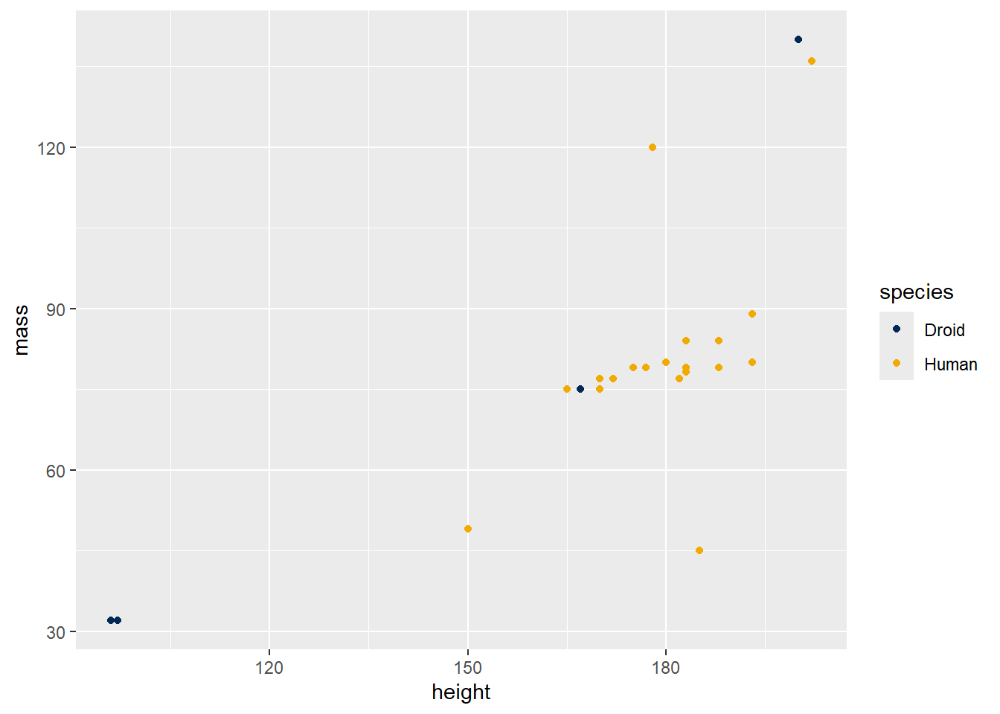

catch_the_dots <- function(...) {
list(...)
}
catch_the_dots(whatever = "hi")$whatever
[1] "hi"SDS 270
In this lab, we will learn how to pass the dots.
Goal: by the end of this lab, you should be able to pass the dots appropriately.
The dots (...) are a way of collecting an arbitrary set of arguments to a function. There are two main purposes as to why you might want to have the dots as an arguments to your function.
First, note that you can convert the dots into a named list within your function using the list() function.
catch_the_dots <- function(...) {
list(...)
}
catch_the_dots(whatever = "hi")$whatever
[1] "hi"You might want to pass the dots to another function from within your function. This is typically useful when you want to leverage the functionality of an existing function, without having to specify all of its arguments. For example, suppose we want to add theming to a ggplot. One way to do that would be to extend the scale_color_manual() function and hard-code the official Smith colors.
First, note that scale_color_manual() takes the dots as an argument.
args(ggplot2::scale_color_manual)function (..., values, aesthetics = "colour", breaks = waiver(),
na.value = "grey50")
NULLMoreover, it passes the dots to manual_scale():
body(ggplot2::scale_color_manual){
manual_scale(aesthetics, values, breaks, ..., na.value = na.value)
}Which in turn passes the dots to discrete_scale():
body(ggplot2:::manual_scale){
call <- call %||% current_call()
if (is_missing(values)) {
values <- NULL
}
else {
force(values)
}
if (is.null(limits) && !is.null(names(values))) {
force(aesthetic)
limits <- function(x) {
x <- intersect(x, c(names(values), NA)) %||% character()
if (length(x) < 1) {
cli::cli_warn(paste0("No shared levels found between {.code names(values)} of the manual ",
"scale and the data's {.field {aesthetic}} values."))
}
x
}
}
if (is.vector(values) && is.null(names(values)) && !is_waiver(breaks) &&
!is.null(breaks) && !is.function(breaks)) {
if (length(breaks) <= length(values)) {
names(values) <- breaks
}
else {
names(values) <- breaks[seq_along(values)]
}
}
pal <- function(n) {
if (n > length(values)) {
cli::cli_abort("Insufficient values in manual scale. {n} needed but only {length(values)} provided.")
}
values
}
discrete_scale(aesthetic, name = name, palette = pal, breaks = breaks,
limits = limits, call = call, ...)
}Which actually does the work (Note that having 3 colons ::: allows you to access functions in an R package that aren’t @exported, i.e. are kept hidden from the user in the function’s roxygen2 code).
body(ggplot2::discrete_scale){
call <- call %||% current_call()
if (lifecycle::is_present(scale_name)) {
deprecate_soft0("3.5.0", "discrete_scale(scale_name)")
}
aesthetics <- standardise_aes_names(aesthetics)
check_breaks_labels(breaks, labels, call = call)
limits <- allow_lambda(limits)
breaks <- allow_lambda(breaks)
labels <- allow_lambda(labels)
minor_breaks <- allow_lambda(minor_breaks)
if (!is.function(limits) && (length(limits) > 0) && !is_discrete(limits)) {
cli::cli_warn(c("Continuous limits supplied to discrete scale.",
i = "Did you mean {.code limits = factor(...)} or {.fn scale_*_continuous}?"),
call = call)
}
position <- arg_match0(position, c("left", "right", "top",
"bottom"))
is_position <- any(is_position_aes(aesthetics))
if (is.null(breaks) && !is_position) {
guide <- "none"
}
if (is_position && identical(palette, identity)) {
palette <- seq_len
}
ggproto(NULL, super, call = call, aesthetics = aesthetics,
palette = palette, range = DiscreteRange$new(), limits = limits,
na.value = na.value, na.translate = na.translate, expand = expand,
name = name, breaks = breaks, minor_breaks = minor_breaks,
labels = labels, drop = drop, guide = guide, position = position)
}According to the Smith College Visual Identity program, the official Smith colors are: #002855, #F2A900.
Thus, we can create a scale_color_smith() function that leverages scale_color_manual() by hard-coding the official Smith color values. But in order to get this to work, we have to pass the dots so that scale_color_manual() can do all the work that it normally does! Otherwise, we would have to copy the source of scale_color_manual() – but that would be inefficient and brittle.
scale_color_smith <- function(...) {
ggplot2::scale_color_manual(
...,
values = c("#002855", "#F2A900")
)
}We can then use our custom function. Note that since it only has two colors, it won’t work if it is mapped to a categorical variable with more than two levels.
starwars |>
filter(species %in% c("Human", "Droid")) |>
ggplot(aes(x = height, y = mass, color = species)) +
geom_point() +
scale_color_smith()Warning: Removed 17 rows containing missing values or values outside the scale range
(`geom_point()`).
Write the corresponding function scale_fill_smith() and test it.
# PUT SOLUTION HERE(Challenge) Write a scale_y_continuous_smith() function that produces a gradient scale from Smith blue to Smith gold.
# PUT SOLUTION HEREThe other main purpose of the dots is to avoid having to specify (or even know) all the arguments that S3 methods take. For example, the print() function takes only the argument x (the thing to be printed) and the dots ...
args(print)function (x, ...)
NULLHowever, different print() methods take different arguments.
args(print.data.frame)function (x, ..., digits = NULL, quote = FALSE, right = TRUE,
row.names = TRUE, max = NULL)
NULLargs(print.factor)function (x, quote = FALSE, max.levels = NULL, width = getOption("width"),
...)
NULLNote that the factor method passes the dots to print() itself. In this case, what is being run is print.default(), which passes them to an internal function.
body(print.factor){
ord <- is.ordered(x)
if (length(x) == 0L)
cat(if (ord)
"ordered"
else "factor", "()\n", sep = "")
else {
xx <- character(length(x))
xx[] <- as.character(x)
keepAttrs <- setdiff(names(attributes(x)), c("levels",
"class"))
attributes(xx)[keepAttrs] <- attributes(x)[keepAttrs]
print(xx, quote = quote, ...)
}
maxl <- max.levels %||% TRUE
if (maxl) {
n <- length(lev <- encodeString(levels(x), quote = ifelse(quote,
"\"", "")))
colsep <- if (ord)
" < "
else " "
T0 <- "Levels: "
if (is.logical(maxl))
maxl <- {
width <- width - (nchar(T0, "w") + 3L + 1L +
3L)
lenl <- cumsum(nchar(lev, "w") + nchar(colsep,
"w"))
if (n <= 1L || lenl[n] <= width)
n
else max(1L, which.max(lenl > width) - 1L)
}
drop <- n > maxl
cat(if (drop)
paste(format(n), ""), T0, paste(if (drop)
c(lev[1L:max(1, maxl - 1)], "...", if (maxl > 1) lev[n])
else lev, collapse = colsep), "\n", sep = "")
}
if (!isTRUE(val <- .valid.factor(x)))
warning(val)
invisible(x)
}args(print.default)function (x, digits = NULL, quote = TRUE, na.print = NULL, print.gap = NULL,
right = FALSE, max = NULL, width = NULL, useSource = TRUE,
...)
NULLbody(print.default){
args <- pairlist(digits = digits, quote = quote, na.print = na.print,
print.gap = print.gap, right = right, max = max, width = width,
useSource = useSource, ...)
missings <- c(missing(digits), missing(quote), missing(na.print),
missing(print.gap), missing(right), missing(max), missing(width),
missing(useSource))
.Internal(print.default(x, args, missings))
}We will define our own print() method, and then run it on a factor. First, let’s make a factor.
x <- factor(starwars$name)
x [1] Luke Skywalker C-3PO R2-D2
[4] Darth Vader Leia Organa Owen Lars
[7] Beru Whitesun Lars R5-D4 Biggs Darklighter
[10] Obi-Wan Kenobi Anakin Skywalker Wilhuff Tarkin
[13] Chewbacca Han Solo Greedo
[16] Jabba Desilijic Tiure Wedge Antilles Jek Tono Porkins
[19] Yoda Palpatine Boba Fett
[22] IG-88 Bossk Lando Calrissian
[25] Lobot Ackbar Mon Mothma
[28] Arvel Crynyd Wicket Systri Warrick Nien Nunb
[31] Qui-Gon Jinn Nute Gunray Finis Valorum
[34] Padmé Amidala Jar Jar Binks Roos Tarpals
[37] Rugor Nass Ric Olié Watto
[40] Sebulba Quarsh Panaka Shmi Skywalker
[43] Darth Maul Bib Fortuna Ayla Secura
[46] Ratts Tyerel Dud Bolt Gasgano
[49] Ben Quadinaros Mace Windu Ki-Adi-Mundi
[52] Kit Fisto Eeth Koth Adi Gallia
[55] Saesee Tiin Yarael Poof Plo Koon
[58] Mas Amedda Gregar Typho Cordé
[61] Cliegg Lars Poggle the Lesser Luminara Unduli
[64] Barriss Offee Dormé Dooku
[67] Bail Prestor Organa Jango Fett Zam Wesell
[70] Dexter Jettster Lama Su Taun We
[73] Jocasta Nu R4-P17 Wat Tambor
[76] San Hill Shaak Ti Grievous
[79] Tarfful Raymus Antilles Sly Moore
[82] Tion Medon Finn Rey
[85] Poe Dameron BB8 Captain Phasma
87 Levels: Ackbar Adi Gallia Anakin Skywalker Arvel Crynyd ... Zam WesellNote that max.levels is one of the arguments to print.factor(), and so we can use that option. Can you spot the difference in the output? If not, read the documentation for print.factor() and see what the max.levels argument does.
args(print.factor)function (x, quote = FALSE, max.levels = NULL, width = getOption("width"),
...)
NULLprint(x, max.levels = 3) [1] Luke Skywalker C-3PO R2-D2
[4] Darth Vader Leia Organa Owen Lars
[7] Beru Whitesun Lars R5-D4 Biggs Darklighter
[10] Obi-Wan Kenobi Anakin Skywalker Wilhuff Tarkin
[13] Chewbacca Han Solo Greedo
[16] Jabba Desilijic Tiure Wedge Antilles Jek Tono Porkins
[19] Yoda Palpatine Boba Fett
[22] IG-88 Bossk Lando Calrissian
[25] Lobot Ackbar Mon Mothma
[28] Arvel Crynyd Wicket Systri Warrick Nien Nunb
[31] Qui-Gon Jinn Nute Gunray Finis Valorum
[34] Padmé Amidala Jar Jar Binks Roos Tarpals
[37] Rugor Nass Ric Olié Watto
[40] Sebulba Quarsh Panaka Shmi Skywalker
[43] Darth Maul Bib Fortuna Ayla Secura
[46] Ratts Tyerel Dud Bolt Gasgano
[49] Ben Quadinaros Mace Windu Ki-Adi-Mundi
[52] Kit Fisto Eeth Koth Adi Gallia
[55] Saesee Tiin Yarael Poof Plo Koon
[58] Mas Amedda Gregar Typho Cordé
[61] Cliegg Lars Poggle the Lesser Luminara Unduli
[64] Barriss Offee Dormé Dooku
[67] Bail Prestor Organa Jango Fett Zam Wesell
[70] Dexter Jettster Lama Su Taun We
[73] Jocasta Nu R4-P17 Wat Tambor
[76] San Hill Shaak Ti Grievous
[79] Tarfful Raymus Antilles Sly Moore
[82] Tion Medon Finn Rey
[85] Poe Dameron BB8 Captain Phasma
87 Levels: Ackbar Adi Gallia ... Zam WesellHowever, since print.factor() eventually passes the dots to print.default(), and print.default() accepts right as one of its arguments, we can use the right argument with the print() generic! Note how the text is right-justified now!
print(x, right = TRUE) [1] Luke Skywalker C-3PO R2-D2
[4] Darth Vader Leia Organa Owen Lars
[7] Beru Whitesun Lars R5-D4 Biggs Darklighter
[10] Obi-Wan Kenobi Anakin Skywalker Wilhuff Tarkin
[13] Chewbacca Han Solo Greedo
[16] Jabba Desilijic Tiure Wedge Antilles Jek Tono Porkins
[19] Yoda Palpatine Boba Fett
[22] IG-88 Bossk Lando Calrissian
[25] Lobot Ackbar Mon Mothma
[28] Arvel Crynyd Wicket Systri Warrick Nien Nunb
[31] Qui-Gon Jinn Nute Gunray Finis Valorum
[34] Padmé Amidala Jar Jar Binks Roos Tarpals
[37] Rugor Nass Ric Olié Watto
[40] Sebulba Quarsh Panaka Shmi Skywalker
[43] Darth Maul Bib Fortuna Ayla Secura
[46] Ratts Tyerel Dud Bolt Gasgano
[49] Ben Quadinaros Mace Windu Ki-Adi-Mundi
[52] Kit Fisto Eeth Koth Adi Gallia
[55] Saesee Tiin Yarael Poof Plo Koon
[58] Mas Amedda Gregar Typho Cordé
[61] Cliegg Lars Poggle the Lesser Luminara Unduli
[64] Barriss Offee Dormé Dooku
[67] Bail Prestor Organa Jango Fett Zam Wesell
[70] Dexter Jettster Lama Su Taun We
[73] Jocasta Nu R4-P17 Wat Tambor
[76] San Hill Shaak Ti Grievous
[79] Tarfful Raymus Antilles Sly Moore
[82] Tion Medon Finn Rey
[85] Poe Dameron BB8 Captain Phasma
87 Levels: Ackbar Adi Gallia Anakin Skywalker Arvel Crynyd ... Zam WesellExperiment by passing some other arguments accepted by print.default() through the dots. Do they work?
# PUT SOLUTION HERENext, we will define a new print() method for objects of class my_factor. This method displays the names of the dots, gives an affirmation of your programming, and then calls NextMethod(). Thus, the behavior is the same as print.factor(), but with a little extra information.
print.my_factor <- function(x, ...) {
dots <- list(...)
if (length(dots) > 0) {
message(paste("\nThe dots are:", names(dots)))
}
affirmations <- c(
"You are a really great programmer!",
"You are so good at this!",
"You're learning so much!",
"Keep trying and you will get there!"
)
if ("affirmation" %in% names(dots)) {
message(sample(affirmations, 1))
}
NextMethod()
}
class(x) <- c("my_factor", class(x))
print(x, max.levels = 3, right = TRUE, affirmation = TRUE)
The dots are: max.levels
The dots are: right
The dots are: affirmationYou are a really great programmer! [1] Luke Skywalker C-3PO R2-D2
[4] Darth Vader Leia Organa Owen Lars
[7] Beru Whitesun Lars R5-D4 Biggs Darklighter
[10] Obi-Wan Kenobi Anakin Skywalker Wilhuff Tarkin
[13] Chewbacca Han Solo Greedo
[16] Jabba Desilijic Tiure Wedge Antilles Jek Tono Porkins
[19] Yoda Palpatine Boba Fett
[22] IG-88 Bossk Lando Calrissian
[25] Lobot Ackbar Mon Mothma
[28] Arvel Crynyd Wicket Systri Warrick Nien Nunb
[31] Qui-Gon Jinn Nute Gunray Finis Valorum
[34] Padmé Amidala Jar Jar Binks Roos Tarpals
[37] Rugor Nass Ric Olié Watto
[40] Sebulba Quarsh Panaka Shmi Skywalker
[43] Darth Maul Bib Fortuna Ayla Secura
[46] Ratts Tyerel Dud Bolt Gasgano
[49] Ben Quadinaros Mace Windu Ki-Adi-Mundi
[52] Kit Fisto Eeth Koth Adi Gallia
[55] Saesee Tiin Yarael Poof Plo Koon
[58] Mas Amedda Gregar Typho Cordé
[61] Cliegg Lars Poggle the Lesser Luminara Unduli
[64] Barriss Offee Dormé Dooku
[67] Bail Prestor Organa Jango Fett Zam Wesell
[70] Dexter Jettster Lama Su Taun We
[73] Jocasta Nu R4-P17 Wat Tambor
[76] San Hill Shaak Ti Grievous
[79] Tarfful Raymus Antilles Sly Moore
[82] Tion Medon Finn Rey
[85] Poe Dameron BB8 Captain Phasma
87 Levels: Ackbar Adi Gallia ... Zam WesellWrite your own method for print() that works on data.frames.
# PUT SOLUTION HERE